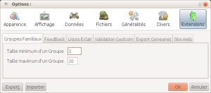
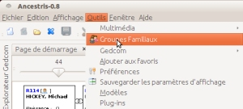
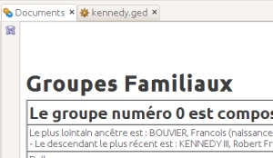

|
Groupes Familiaux a un seul réglage, il concerne la taille des groupes qui vont être détaillés lors de l'affichage du résultat.
Ni les trop petits, ni les trop grands.  Ce réglage est facile à revoir s'il ne convient pas à votre généalogie. |
Avec le réglage de l'image, seuls les groupes contenant entre 2 et 20 individus seront détaillés. Les boutons [OK] / [Annuler] servent à Valider / Abandonner les choix. Les boutons [Export] / [Importer] servent à Sauvegarder / Récupérer le fichier de configuration d'Ancestris. |
|  |
|  | En haut à gauche, une disquette indique le moyen de sauvegarder le document produit. Trois types de fichier sont disponibles pour cette sauvegarde. Seul Html est efficace à ce jour, csv crée un fichier vide et pdf tronque la partie droite du tableau. |
|
|
|